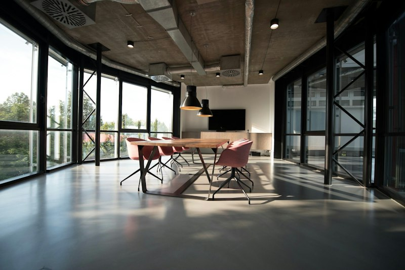
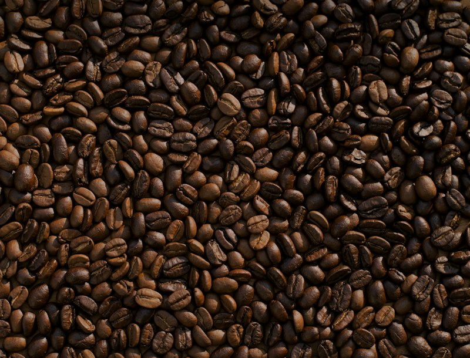

Uzaktan çalışma mı, ofisten çalışma mı daha verimli?

Uzaktan çalışma%68

Ofis çalışması%32
42 yorum♡ 98 beğeni
Merak ettiğin her konuda anket aç, oy ver, tartış ve sonuçları birlikte şekillendir.
Grafik görünümü örneği; gerçek analitik değildir.
Moderasyon listesi, yetki ve işlem davranışları ilgili modül sahibi tarafından bağlanacak. Bu ekran yalnızca kart ve grafik düzenini gösterir.
Ortak tablo ve modal örneklerini incele →

Başka bir kelime veya kategori deneyebilirsin.
Henüz gösterilecek anket yok. Bir soruyla sohbeti başlatabilirsin.
Anket oluşturma örneğiBağlantı hatası örneği. Tekrar dene düğmesi örnek akışı geri getirir.
Aynı dil. Her ekranda, her cihazda.
Arka plan--kv-background · #090B10
Yüzey--kv-surface · #11151D
Ana vurgu--kv-primary · #7C3AED
İkincil vurgu--kv-primary-light · #A855F7
Tipografi: sistem fontu · Boşluklar: 4 / 8 / 12 / 16 / 24 / 32 / 48 px
Eylem, gezinme ve işlem bekleme durumları.
Durum bilgisi renk yanında her zaman metinle aktarılır.
| Anket | Durum | Kategori |
|---|---|---|
| Üniversite için bilgisayar | Aktif | Teknoloji |
| Hafta sonu rotası | Kapandı | Yaşam |
Yükleniyor, boş ve hata örneklerini akıştaki durum seçiciden incele.
Etiket, açıklama, doğrulama ve odak yönetimi örneği.
Topluluğun merak ettiği sorulara bir göz at.
Yapay zekâ çalışma şeklimizi değiştirir mi?Teknoloji · Örnek içerik↗2Büyük şehir mi, kıyı kasabası mı?Yaşam · Örnek içerik↗3
Güne başlarken hangi kahve?Yaşam · Örnek içerik↗4Yaz tatili için senin rotan hangisi?Seyahat · Örnek içerik↗Henüz yeterli karşılaştırma verisi yok. Gerçek trend puanları ve dönem filtreleri API bağlandığında gösterilecek.
Yorumlar, cevaplar ve kararlarınla ilgili gelişmeler burada yer alacak.
Akışı keşfetTeknoloji, seyahat ve günlük yaşam hakkında birlikte düşünüyoruz. 💜
Bu görünüm bir tasarım örneğidir; gerçek profil veya oturum içermez.
Anketlerin ve kaydettiğin fikirler profilinde bir araya gelecek.
Örnek anketleri keşfetİşlem tamamlanamadı. Bu örnekte tekrar denemek akışa döndürür.
Tekrar dene